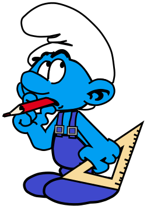

<h2 class="book-page-title" data-book-bind="unit.bricoleur.label"></h2>
<p>

Штрумф самоделкин любит мастерить. Он умеет закладывать особые фундаменты и вести исследования. Он не собирает еду. Мастерская увеличивает его исследовательскую производительность в <span data-book-ratio="rules.units.types.bricoleur.modifiers.0.set.researchPointsPerTurn" data-book-ratio-base="unit.bricoleur.researchPointsPerTurn"></span> раза.
</p>
